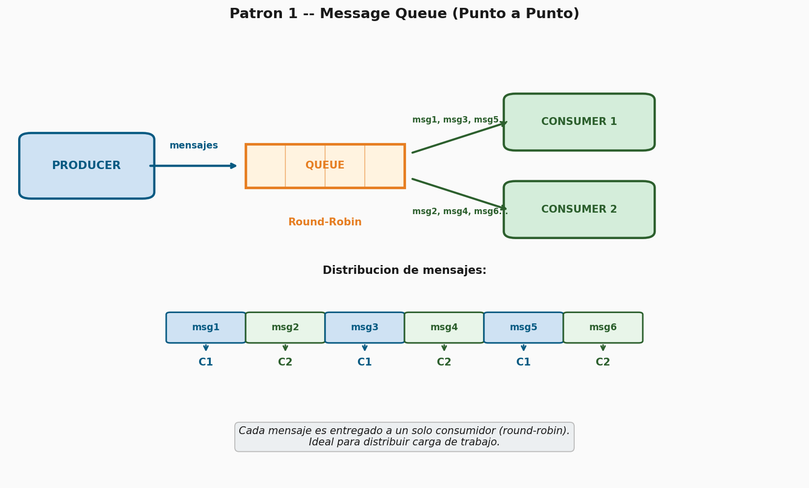
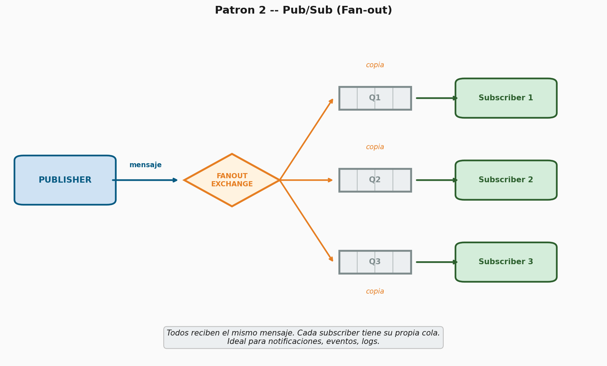
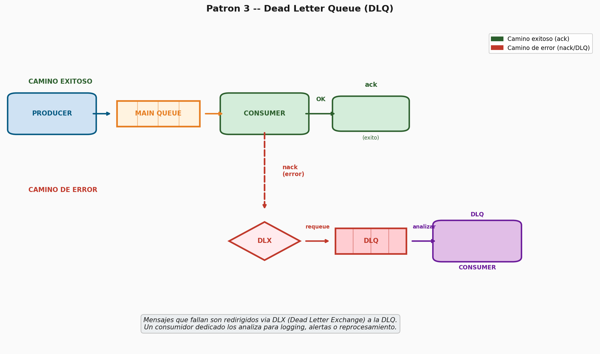
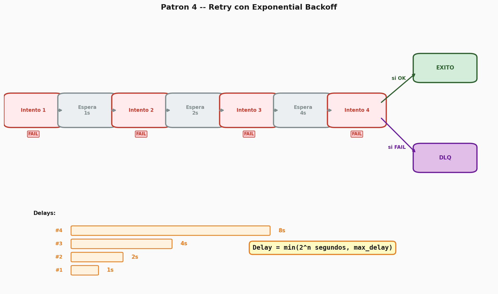
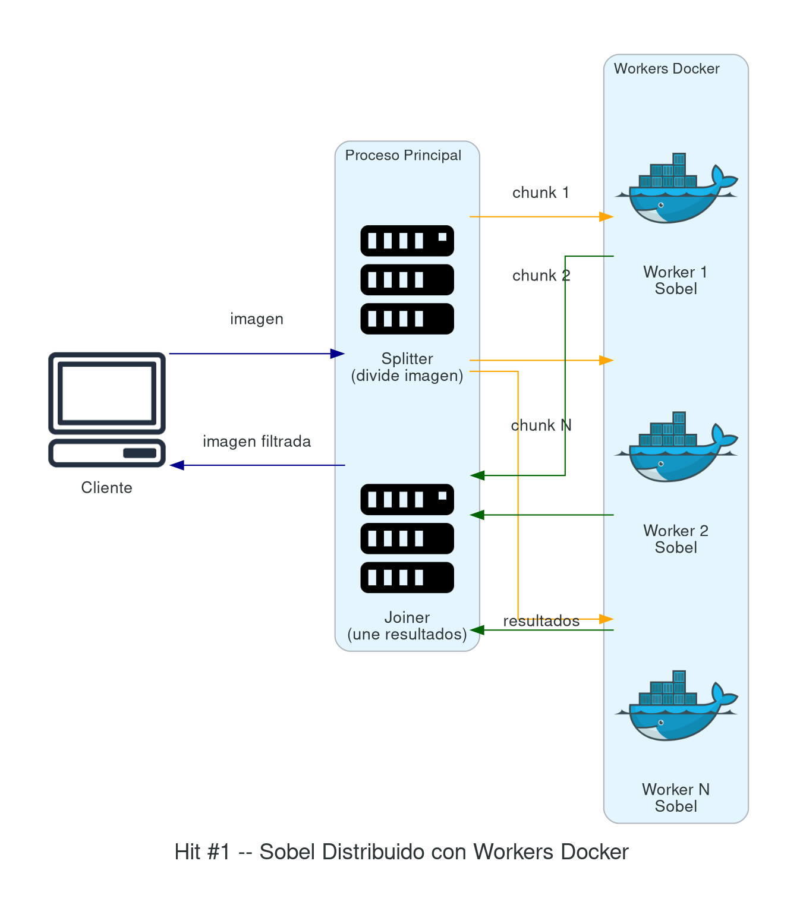

📑 Índice del documento
- Trabajo Práctico Nº 3 — Parte 1
Trabajo Práctico Nº 3 — Parte 1
Computación Distribuida (Kubernetes / RabbitMQ)
Fecha de entrega: 05/05/2026 — todos los puntos.
Requisitos, consideraciones y formato de entrega
Integrar herramientas de IA en su ciclo de vida de desarrollo (Cursor, ChatGPT/Codex, Claude, GitHub Copilot, etc.). Se espera que las usen como asistentes para codificar, depurar y documentar. En el informe, mencionen qué herramientas usaron y cómo les ayudaron.
Lenguaje libre dentro de los vistos en clase (Node.js, Python, Java).
Video explicativo subido al repositorio donde expliquen los servicios, componentes y configuraciones que tomaron en cuenta. Debe mostrar que comprenden cada punto y su desarrollo.
Pruebas unitarias y de integración: incluir un conjunto mínimo de pruebas automatizadas que cubran las funcionalidades críticas del proyecto.
Informe detallado que incluya respuestas a consultas, métricas y tiempos de evaluación, gráficas, diagramas de arquitectura y conclusiones.
Repositorio público en un servicio de control de versiones (GitHub, GitLab o Bitbucket). Cada ejercicio (Hit #N) debe contar con una carpeta y un
README.mdexplicativo que incluya como mínimo: instrucciones para ejecutar el proyecto, diagrama de arquitectura y decisiones de diseño tomadas.Ejecutable desde la terminal, con recursos preparados para ser desplegados directamente sin necesidad de abrir un IDE.
Pipeline de CI/CD que automatice la compilación y el despliegue de la aplicación con cada nueva versión del código (GitHub Actions).
Despliegue público en la nube, accesible desde Internet, para su evaluación en producción.
Endpoint de health-check público por cada servicio. No requiere GUI, puede devolver un JSON simple (
{servicio: estado}). Ejemplos: status.lemon.me, health.aws.amazon.com.Logging: mantener registros de actividad en memoria y persistirlos en disco.
Seguridad:
No commitear
.env, credenciales ni secrets al repositorio. Configurar.gitignoreapropiado desde el inicio.Gestionar credenciales por ambiente de forma segura (GitHub Secrets, Secret Manager / Parameter Store). Zero static keys: autenticarse contra cloud providers vía Workload Identity / OIDC.
Para registros Docker: usar image pull secrets o Workload Identity en lugar de enviar credenciales en payloads.
Incluir gitleaks [GITLEAKS] en el pipeline de CI — si detecta un secret hardcodeado, el pipeline debe fallar.
Si expusieron un secret accidentalmente, revóquenlo de inmediato y generen uno nuevo: queda en el historial de Git aunque después lo eliminen.
Contenidos del programa relacionados
- U3.1 Cloud Computing: principios y aplicaciones.
- U4.3 Contenedores Docker: imágenes,
Dockerfile,docker-compose. - U4.4 Orquestación con Kubernetes [K8S]: Pods, Services, Deployments, autoscaling, tolerancia a fallos.
- U4.5 Características de la nube: elasticidad, tipos de nube (híbrida), Cloud-Bursting.
- U5.1–U5.4 DevOps y CI/CD: pipelines de despliegue, construcción de imágenes Docker, despliegues sobre Kubernetes.
- U5.5 Observabilidad: logging, métricas y monitoreo (Prometheus, Grafana).
- U5.6 Infraestructura como Código (IaC): Terraform.
- U7.5 Esquemas algorítmicos paralelos: Maestro/Esclavo, Granja de Trabajadores [BUR18].
Ámbito de ejecución: todos los Hits de esta Parte 1 corren sobre Kubernetes local (Microk8s, k3s o similar). El despliegue en la nube es el alcance de la Parte 2.
Hit #0 — Patrones de Mensajería con RabbitMQ
Antes de comenzar con el procesamiento distribuido de imágenes, es fundamental comprender los patrones de mensajería [HOH03] que van a usar a lo largo de este TP y del TP Integrador. RabbitMQ [RMQ] —que implementa el protocolo AMQP 0-9-1 [AMQP]— va a ser su broker de mensajes, y necesitan entender cómo funciona y qué patrones soporta. La referencia clásica de Tanenbaum & Van Steen [TAN17] cubre los fundamentos teóricos de comunicación asincrónica entre procesos distribuidos.
Implementen los siguientes 4 ejemplos simples utilizando
RabbitMQ. Cada ejemplo es un programa funcional independiente
con su código en una subcarpeta dedicada del repositorio
(TP3/queue/exN/), e incluye los manifiestos de Kubernetes
para desplegarlo.

Ejemplo 1 — Message Queue (punto a punto)
Un productor envía mensajes a una cola y un solo consumidor los recibe. Cada mensaje es procesado exactamente por un consumidor. Implementen un productor que envíe 10 tareas numeradas y un consumidor que las reciba y las imprima. Después levanten 2 consumidores y observen cómo RabbitMQ distribuye los mensajes entre ambos (round-robin). Documenten el comportamiento observado.

Ejemplo 2 — Event Bus / Pub-Sub (fan-out)
Un productor publica eventos en un exchange de tipo
fanout y todos los consumidores suscritos
reciben una copia del mensaje. Implementen un publicador que emita
eventos de “nuevo bloque minado” y 3 suscriptores que representen nodos
de la red que deben recibir la notificación. Verifiquen que los 3
reciben el mismo mensaje.
En la industria, este patrón lo implementan servicios como AWS EventBridge, Google Pub/Sub y Apache Kafka [KREP11] —diseñado originalmente en LinkedIn para procesamiento de logs distribuidos a escala masiva.

Ejemplo 3 — Dead Letter Queue (DLQ)
Configuren una cola principal con un Dead Letter Exchange
(DLX) en RabbitMQ. El consumidor debe rechazar
(nack) los mensajes que contengan un campo
"error": true, y estos deben ser redirigidos
automáticamente a la cola de Dead Letters. Implementen un segundo
consumidor que lea la DLQ e imprima los mensajes fallidos.
Este patrón es fundamental para no perder mensajes que no pudieron ser procesados. En la industria se usa en SQS + DLQ (AWS) y RabbitMQ DLX.

Ejemplo 4 — Retry con Exponential Backoff
Implementen un consumidor que al recibir un mensaje intente procesarlo, y si falla (simulen un fallo aleatorio con probabilidad del 50%) lo reencole con un delay creciente: 1s, 2s, 4s, 8s (exponential backoff). Después de 4 reintentos fallidos, envíen el mensaje a la DLQ del ejemplo anterior.
Para implementar el delay pueden usar el plugin
rabbitmq_delayed_message_exchange o TTL por mensaje con una
cola intermedia. Registren en un log el número de intento y el tiempo de
espera de cada reintento.
Este patrón es estándar en la industria para manejar fallos transitorios (servicios caídos, timeouts, rate limits).
Ejemplo 5 — Discusión
Documenten en el informe (TP3/queue/ex5/): un diagrama
de arquitectura de cada patrón, las diferencias entre ellos y en qué
escenarios usarían cada uno. Esta base les va a servir para los Hits
siguientes, donde aplicarán estos patrones al procesamiento distribuido
de imágenes.
Recordatorio de entrega del Hit #0: cada ejemplo va en su carpeta
TP3/queue/exN/con el código de la aplicación, los manifiestos de Kubernetes y un breveREADME.md. El Ejemplo 5 incluye solo la documentación comparativa.
Hit #1 — El operador de Sobel (“un equipo”)
El operador de Sobel [SOB68] es una máscara que, aplicada a una imagen, permite detectar (resaltar) bordes. Es una operación matemática que, aplicada a cada píxel y considerando los píxeles vecinos, obtiene un nuevo valor (color) para ese píxel. Aplicando la operación a cada píxel se obtiene una nueva imagen que resalta los bordes.
Objetivo:
- Input: una imagen.
- Proceso: aplicación del operador de Sobel.
- Output: una imagen filtrada (con los bordes resaltados).
Etapa 1 — Centralizado. Desarrollen un proceso centralizado que tome una imagen, aplique la máscara y genere un nuevo archivo con el resultado. Ámbito: una sola laptop / equipo.
Etapa 2 — Distribuido. Desarrollen el mismo proceso de manera distribuida: dividan la imagen en N pedazos y asignen la tarea de aplicar la máscara a N procesos distribuidos (workers). Después unifiquen los resultados. Este es exactamente el patrón Master-Worker (también llamado Granja de Trabajadores) que Foster [FOS95] caracteriza como uno de los esquemas algorítmicos paralelos fundamentales. Ámbito: Docker.
Etapa 3 — Tolerante a fallos. Mejoren la aplicación de la Etapa 2 para que, en caso de que un worker (proceso distribuido al que se le asignó parte de la imagen a procesar) se caiga y no responda, el proceso principal detecte la situación y reasigne el cálculo a otro worker.

Referencias y Bibliografía
Libros y papers fundacionales
- [BUR18] Burns, B. (2018). Designing Distributed Systems: Patterns and Paradigms for Scalable, Reliable Services. O’Reilly Media.
- [FOS95] Foster, I. (1995). Designing and Building Parallel Programs: Concepts and Tools for Parallel Software Engineering. Addison-Wesley. — Cap. 2: Master-Worker y Granja de Trabajadores. Disponible online: mcs.anl.gov/~itf/dbpp
- [HOH03] Hohpe, G. & Woolf, B. (2003). Enterprise Integration Patterns: Designing, Building, and Deploying Messaging Solutions. Addison-Wesley. — Referencia canónica de patrones de mensajería (Message Queue, Pub/Sub, DLQ, Retry).
- [KREP11] Kreps, J., Narkhede, N. & Rao, J. (2011). “Kafka: a Distributed Messaging System for Log Processing”. Proceedings of the NetDB Workshop. PDF
- [SOB68] Sobel, I. & Feldman, G. (1968). “A 3x3 Isotropic Gradient Operator for Image Processing”. Stanford AI Project.
- [TAN17] Tanenbaum, A.S. & Van Steen, M. (2017). Distributed Systems: Principles and Paradigms (3rd ed.). Pearson. — Caps. 4 y 7: comunicación y consistencia.
Especificaciones y documentación técnica
- [AMQP] OASIS (2014). AMQP 0-9-1 Protocol Specification. rabbitmq.com/amqp-0-9-1-reference
- [K8S] Kubernetes Documentation. kubernetes.io/docs
- [RMQ] RabbitMQ Documentation — Tutorials y patrones de mensajería. rabbitmq.com/tutorials
Herramientas
- [GITLEAKS] Gitleaks — Protect and discover secrets. github.com/gitleaks/gitleaks